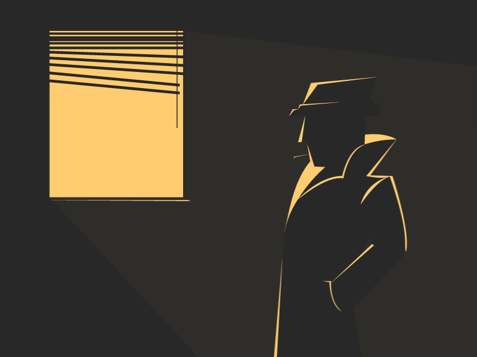
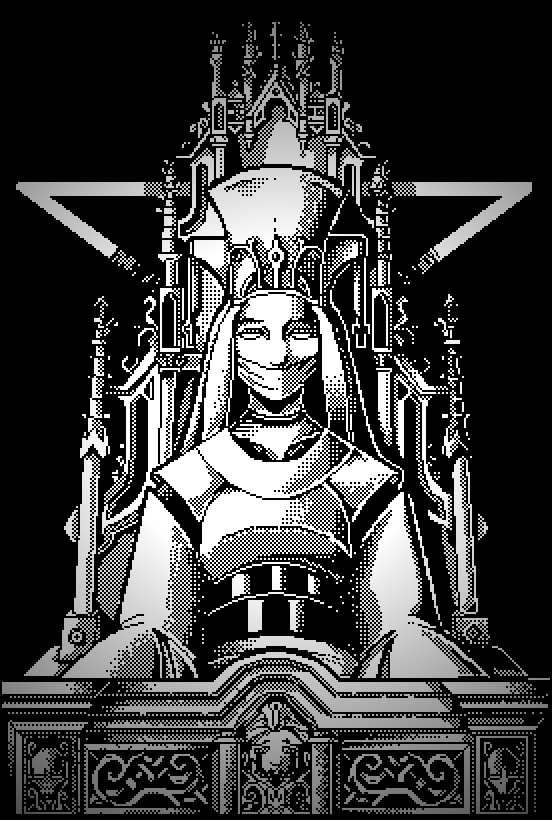

🔍 دفتر الدلائل
✕
🔍 الدلائل

⚠ تحذير
عندك قضية مفتوحة لسه.
لو بدأت جديدة هيتضيع كل تقدمك.
مفيش رجوع من القرار ده.
أيوه — ابدأ من الأول
لأ — ارجع
— متوقف —
▶ إكمال
⚙ الإعدادات
✕ الخروج
SECRET
CASE
— فتح ملف القضية —
0%
تهيئة الأنظمة...
CLASSIFIED
FILE №001
CASE DIVISION
DATE: ██/██/████
TOP SECRET — EYES ONLY
الميناء؟
الشاهد
Mr. Grey??
A Detective Mystery — Demo v0.3
SECRET
CASE
"الحقيقة بتتخبى... بس مش للأبد."
New Case
Continue
Settings
Credits
🕵️
المحقق ترجر
محقق خاص
TRIGGER
[ اضغط ENTER أو كليك للمتابعة ]
01
02
03
⚠ الوقت بيخلص...
⚙ الإعدادات
MUSIC
−
60
+
SFX
−
80
+
SPEED
−
2
+
SCANLINES
SMOKE
TIMER
← رجوع
Secret Case
Story & Design
MOHAND WORLD
Built With
HTML5 · CSS3 · JavaScript
Fonts
Special Elite · Courier Prime
Detective
المحقق ترجر
SECRET CASE — DEMO v0.3 — © 2026 MOHAND WORLD
← رجوع
⚖️
العدالة اتحققت
السيد جراي وراء القضبان.
المدينة استنفست الصبح... لفترة.
المحقق ترجر وقف عند الشباك بيبص على الليل الهادي.
"الظلام بيرجع دايماً. بس العدل بييجي معاه."
CASE CLOSED
← القائمة الرئيسية
🩸
النهاية المظلمة
المحقق ترجر اختفى تلك الليلة.
الملف اتقفل بختم أحمر...
"مفقود — القضية متوقفة إلى أجل غير مسمى."
CASE FAILED
← حاول تاني
🌫️
في الضباب...
السيد جراي هرب قبل القبض عليه.
القضايا اتقفلت رسمياً.
"الحكاية دي مخلصتش بعد يا ترجر."
UNRESOLVED
← العودة
اليوم الأول
اليوم الأول — المحكمة

[ اضغط للمتابعة ]